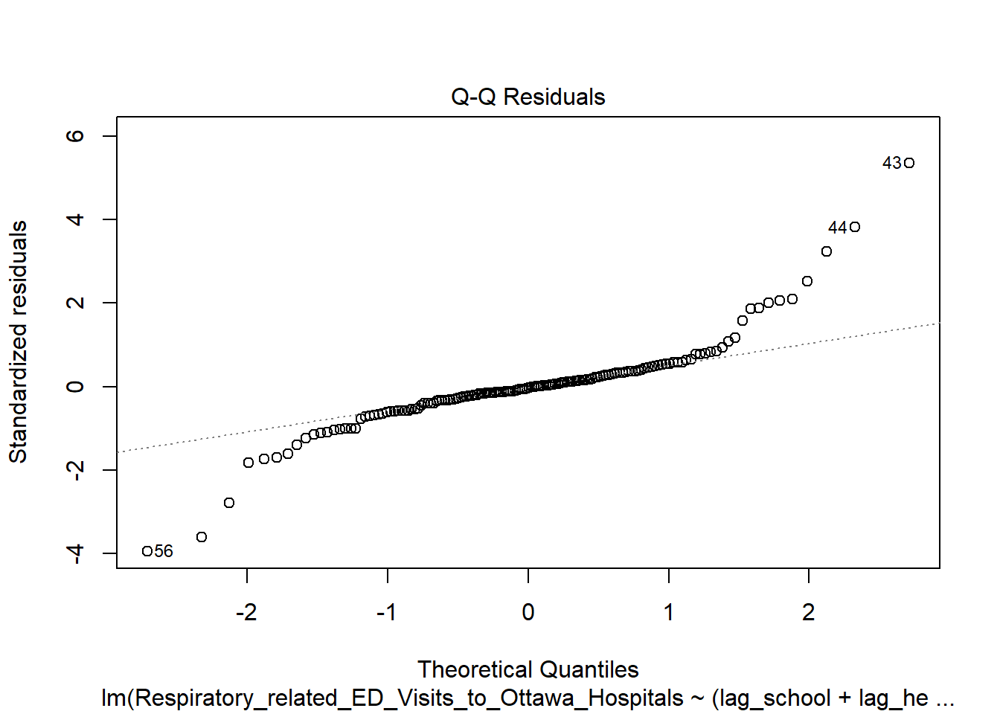
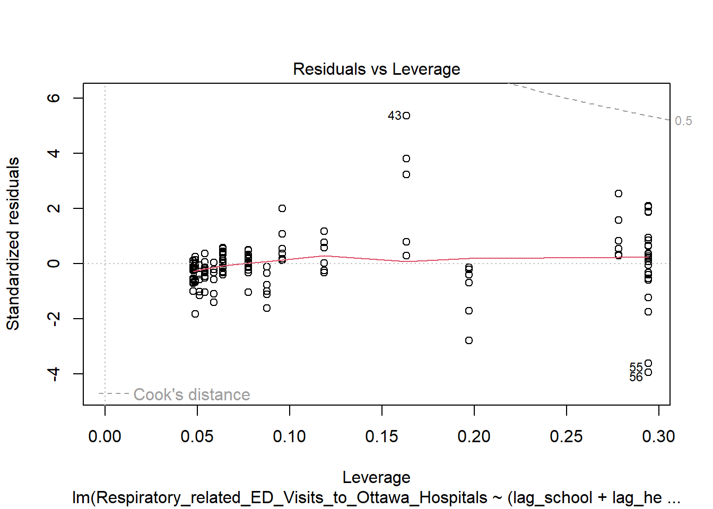
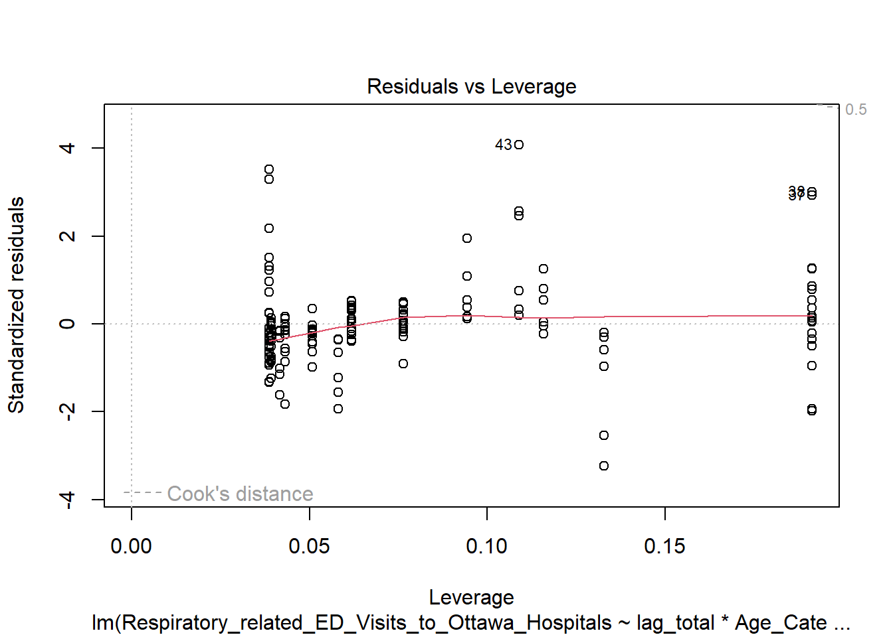
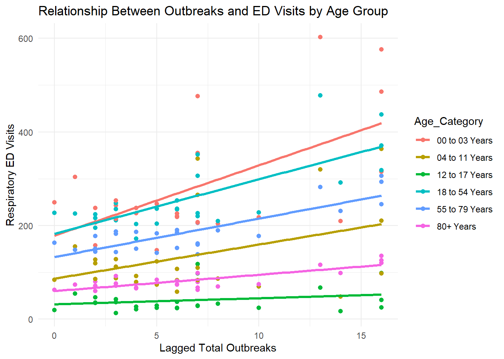
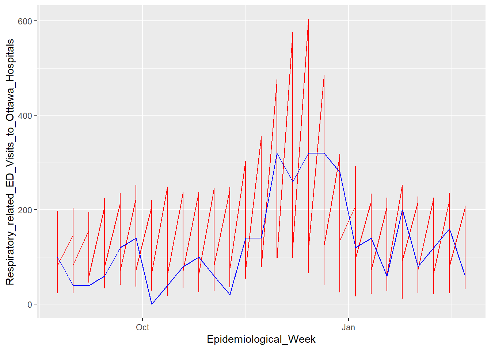

Respiratory Illness Patterns in Ottawa
I. Motivation
Respiratory illnesses place a recurring seasonal burden on healthcare systems. Understanding how outbreaks translate into emergency department (ED) visits can help anticipate healthcare demand and identify vulnerable populations.
This project investigates how institutional respiratory outbreaks relate to ED utilization in Ottawa, with a focus on age-specific effects and seasonal dynamics.
This project was a submission to the R-Ladies Ottawa International Women’s Day Data Challenge.

II. Data Sources
This analysis combines two datasets from Ottawa Public Health:
- Emergency Department Visits: Weekly counts of respiratory-related visits by age group.
- Respiratory Outbreaks: Weekly outbreaks in schools, healthcare institutions, and congregate care settings.
The data allows us to explore how outbreaks affect ED utilization and identify vulnerable populations by age and setting.

This dataset measures healthcare burden and contains weekly counts of emergency department (ED) visits.
The datasets were obtained from Ottawa Public Health and provide a measure of healthcare burden through weekly emergency department (ED) visits and reported respiratory outbreaks:
ED Visits: Ottawa Public Health – Emergency Department Data Respiratory Outbreaks: Ottawa Public Health – Institutional Outbreak Data
These sources allow for a detailed exploration of the relationship between outbreaks and healthcare utilization in Ottawa.
III. Research questions
We model the relationship between outbreaks and healthcare utilization as:
\[ \text{Outbreaks}_{t-1} \rightarrow \text{Community transmission}_t \rightarrow \text{ED visits}_t \]
Because infections take time to develop into severe symptoms, outbreak counts are lagged by one week.
This project investigates the following questions:
- Do increases in respiratory outbreaks predict increases in emergency visits?
- Are certain age groups more sensitive to outbreaks than others?
- Is the current season above or below historical baseline?
- Do outbreaks in specific settings (schools, healthcare, congregate care) predict increases in respiratory-related ED visits for different age groups?
IV. Data preparation
Datasets were cleaned, aligned by epidemiological week, and merged. Outbreak variables were renamed and aggregated into a total outbreak measure.
library(tidyverse)
library(lubridate)
library(here)
ed <- read.csv(here("data", "All_causes_and_respiratory_related_emergency.csv"), header = TRUE)
outbreaks <- read.csv(here("data", "Respiratory_Outbreaks_(excluding_COVID-19).csv"), header = TRUE)
merged <- ed |>
left_join(outbreaks, by = c("Epidemiological_Week" = "Start_of_the_Week"))
ed <- ed |>
mutate(Epidemiological_Week = ymd(Epidemiological_Week))
outbreaks <- outbreaks |>
mutate(Start_of_the_Week = ymd(Start_of_the_Week))
merged <- merged |>
rename(
outbreaks_school =
Number_of_Respiratory_Outbreaks__Excl__COVID_19__in_Schools__Camps__and_Licensed_Child_Care,
outbreaks_health =
Number_of_Respiratory_Outbreaks__Excl__COVID_19__in_Healthcare_Institutions,
outbreaks_congregate =
Number_of_Respiratory_Outbreaks__Excl__COVID_19__in_Congregate_Care,
prev_avg_school =
Previous_3_Season_Average_of_Respiratory_Outbreaks__Excl__COVID_19__in_Schools__Camps__and_Child_Care,
prev_avg_health =
Previous_3_Season_Average_of_Respiratory_Outbreaks__Excl__COVID_19__in_Healthcare_Institutions,
prev_avg_congregate =
Previous_3_Season_Average_of_Respiratory_Outbreaks__Excl__COVID_19__in_Congregate_Care,
pre_covid_school =
Prior_to_COVID_19_3_Season_Average_of_Respiratory_Outbreaks_in_Schools__Camps__and_Child_Care,
pre_covid_health =
Prior_to_COVID_19_3_Season_Average_of_Respiratory_Outbreaks_in_Healthcare_Institutions,
pre_covid_congregate =
Prior_to_COVID_19_3_Season_Average_of_Respiratory_Outbreaks_in_Congregate_Care
)
merged <- merged |>
mutate(total_outbreaks =
outbreaks_school + outbreaks_health + outbreaks_congregate)
merged <- merged |>
mutate(total_outbreaks_prev =
prev_avg_school + prev_avg_health + prev_avg_congregate)
merged <- merged |>
mutate(total_outbreaks_pre_covid =
pre_covid_school + pre_covid_health + pre_covid_congregate)V. Exploratory analysis
Seasonal trends show clear early winter peaks in respiratory-related ED visits across all age groups.
Younger age groups exhibit sharper spikes, suggesting greater sensitivity to transmission cycles. (OR THIS COULD ALSO BE DUE TO LESS DATA RECORDED FOR OLDER PEOPLE, OIVERSENSITIVITY OF BRINGING HILDREN TO HOSPITAL JUST CHECK THIS)

ggplot(merged,
aes(x = Epidemiological_Week,
y = Respiratory_related_ED_Visits_to_Ottawa_Hospitals,
group = Age_Category)) +
geom_line() +
facet_wrap(~Age_Category)VI. Lagging for Outrbreak Effects
To account for delayed effects, outbreak counts are lagged by one week.
\[ \text{ED Visits}_t = \beta_0+\beta_1\text{Outbreaks}_{t-1}+\epsilon \]
(More explanation about what lagging is and why i kept lagging separate by school, health, cong, and one for total)
# Step 1: create weekly lag dataset
lag_df <- merged |>
distinct(Epidemiological_Week,
total_outbreaks,
outbreaks_school,
outbreaks_health,
outbreaks_congregate) |>
arrange(Epidemiological_Week) |>
mutate(
lag_total = lag(total_outbreaks, 1),
lag_school = lag(outbreaks_school, 1),
lag_health = lag(outbreaks_health, 1),
lag_congregate = lag(outbreaks_congregate, 1)
)
# Step 2: join back to full dataset
merged <- merged |>
left_join(
lag_df |> select(Epidemiological_Week,
lag_total,
lag_school,
lag_health,
lag_congregate),
by = "Epidemiological_Week"
)
# Step 3: drop NA from first week
analysis_df <- merged |>
drop_na(lag_total, lag_school, lag_health, lag_congregate)VII. Regression Analysis
To understand how respiratory outbreaks influence emergency department (ED) visits, we evaluate a series of models with increasing complexity.
Our goal is to identify a model that balances:
Interpretability (clear, meaningful effects)
Predictive performance (explains variation in ED visits)
Statistical validity (avoids unnecessary complexity or instability)
Model 1: Baseline Model: Do outbreaks predict ED visits?
We begin with a model that includes lagged outbreak counts and age category, but no interaction terms.
This assumes that outbreaks affect all age groups equally.
!! Reference group: Age 0–3 (baseline category)
model1 <- lm(Respiratory_related_ED_Visits_to_Ottawa_Hospitals ~
lag_school + lag_health + lag_congregate + Age_Category,
data = analysis_df)
summary(model1)
Call:
lm(formula = Respiratory_related_ED_Visits_to_Ottawa_Hospitals ~
lag_school + lag_health + lag_congregate + Age_Category,
data = analysis_df)
Residuals:
Min 1Q Median 3Q Max
-144.737 -32.334 -1.003 21.170 296.731
Coefficients:
Estimate Std. Error t value Pr(>|t|)
(Intercept) 231.558 13.477 17.182 < 2e-16 ***
lag_school -19.745 24.736 -0.798 0.426
lag_health 5.747 1.128 5.097 1.05e-06 ***
lag_congregate 67.435 14.245 4.734 5.13e-06 ***
Age_Category04 to 11 Years -143.462 16.417 -8.739 4.91e-15 ***
Age_Category12 to 17 Years -238.346 16.417 -14.518 < 2e-16 ***
Age_Category18 to 54 Years -18.462 16.417 -1.125 0.263
Age_Category55 to 79 Years -91.115 16.417 -5.550 1.30e-07 ***
Age_Category80+ Years -195.385 16.417 -11.901 < 2e-16 ***
---
Signif. codes: 0 '***' 0.001 '**' 0.01 '*' 0.05 '.' 0.1 ' ' 1
Residual standard error: 59.19 on 147 degrees of freedom
Multiple R-squared: 0.7398, Adjusted R-squared: 0.7257
F-statistic: 52.25 on 8 and 147 DF, p-value: < 2.2e-16Do outbreaks predict ED visits? YES!
| Predictor | Estimate | p-value | Intepretation |
|---|---|---|---|
lag_school |
|||
lag_health |
|||
lag_congregate |
Key Results
Healthcare and congregate care outbreaks significantly predict ED visits
School outbreaks are not significant
Age is a strong predictor of baseline ED usage
Interpretation
Outbreak activity is clearly associated with increases in ED visits
However, this model assumes a constant effect across age groups, which may be unrealistic
Younger children (0–3) have the highest baseline ED usage, with all other groups significantly lower
Model 2: Interaction Model (Do outbreak effects differ by age?)
We now allow the effect of outbreaks to vary across age groups by including interaction terms.
\[ \text{ED Visits} = \text{(Outbreaks)} \times \text{(Age Category)} \]
model2 <- lm(
Respiratory_related_ED_Visits_to_Ottawa_Hospitals ~
(lag_school + lag_health + lag_congregate) * Age_Category,
data = analysis_df
)
summary(model2)
Call:
lm(formula = Respiratory_related_ED_Visits_to_Ottawa_Hospitals ~
(lag_school + lag_health + lag_congregate) * Age_Category,
data = analysis_df)
Residuals:
Min 1Q Median 3Q Max
-181.387 -17.432 -0.073 16.481 268.459
Coefficients:
Estimate Std. Error t value Pr(>|t|)
(Intercept) 188.537 18.862 9.996 < 2e-16
lag_school -48.923 56.037 -0.873 0.384222
lag_health 11.231 2.554 4.397 2.24e-05
lag_congregate 124.037 32.271 3.844 0.000188
Age_Category04 to 11 Years -91.821 26.675 -3.442 0.000773
Age_Category12 to 17 Years -153.052 26.675 -5.738 6.26e-08
Age_Category18 to 54 Years -1.184 26.675 -0.044 0.964663
Age_Category55 to 79 Years -55.081 26.675 -2.065 0.040891
Age_Category80+ Years -127.503 26.675 -4.780 4.61e-06
lag_school:Age_Category04 to 11 Years 46.359 79.249 0.585 0.559559
lag_school:Age_Category12 to 17 Years 46.047 79.249 0.581 0.562197
lag_school:Age_Category18 to 54 Years 22.141 79.249 0.279 0.780387
lag_school:Age_Category55 to 79 Years 24.396 79.249 0.308 0.758688
lag_school:Age_Category80+ Years 36.125 79.249 0.456 0.649252
lag_health:Age_Category04 to 11 Years -8.756 3.613 -2.424 0.016711
lag_health:Age_Category12 to 17 Years -11.833 3.613 -3.275 0.001348
lag_health:Age_Category18 to 54 Years -1.326 3.613 -0.367 0.714139
lag_health:Age_Category55 to 79 Years -2.886 3.613 -0.799 0.425816
lag_health:Age_Category80+ Years -8.104 3.613 -2.243 0.026552
lag_congregate:Age_Category04 to 11 Years 20.512 45.637 0.449 0.653836
lag_congregate:Age_Category12 to 17 Years -68.956 45.637 -1.511 0.133189
lag_congregate:Age_Category18 to 54 Years -62.142 45.637 -1.362 0.175632
lag_congregate:Age_Category55 to 79 Years -119.118 45.637 -2.610 0.010098
lag_congregate:Age_Category80+ Years -109.909 45.637 -2.408 0.017408
(Intercept) ***
lag_school
lag_health ***
lag_congregate ***
Age_Category04 to 11 Years ***
Age_Category12 to 17 Years ***
Age_Category18 to 54 Years
Age_Category55 to 79 Years *
Age_Category80+ Years ***
lag_school:Age_Category04 to 11 Years
lag_school:Age_Category12 to 17 Years
lag_school:Age_Category18 to 54 Years
lag_school:Age_Category55 to 79 Years
lag_school:Age_Category80+ Years
lag_health:Age_Category04 to 11 Years *
lag_health:Age_Category12 to 17 Years **
lag_health:Age_Category18 to 54 Years
lag_health:Age_Category55 to 79 Years
lag_health:Age_Category80+ Years *
lag_congregate:Age_Category04 to 11 Years
lag_congregate:Age_Category12 to 17 Years
lag_congregate:Age_Category18 to 54 Years
lag_congregate:Age_Category55 to 79 Years *
lag_congregate:Age_Category80+ Years *
---
Signif. codes: 0 '***' 0.001 '**' 0.01 '*' 0.05 '.' 0.1 ' ' 1
Residual standard error: 54.74 on 132 degrees of freedom
Multiple R-squared: 0.8002, Adjusted R-squared: 0.7654
F-statistic: 22.98 on 23 and 132 DF, p-value: < 2.2e-16| Predictor | Estimate | p-value | Intepretation |
|---|---|---|---|
lag_school |
|||
lag_health |
|||
lag_congregate |
Consistent with the previous model, lag health and congregate are significant predictors, lag school is not
The new question: do outbreak effects differ by age groups
| Predictor | Interpretation |
|---|---|
lag_school x Age |
School outbreaks do not predict ED visits for any age group. |
lag_health x Age |
Healthcare outbreaks predict ED visits across age groups, but the strength varies. It is weaker for teens and the oldest adults compared to toddlers, and insignificant for young to middle aged adults. |
lag_congregate x Age |
Congregate-care outbreaks predict ED visits, but the effect is strongest in the youngest age group. |
Key Results
Healthcare and congregate outbreaks remain strong predictors
School outbreaks remain weak or insignificant
Several interaction terms are statistically significant
Interpretation
The impact of outbreaks varies across age groups
Congregate care outbreaks have the strongest and most consistent effect
Healthcare outbreaks affect most age groups, but with varying intensity
School outbreaks show little evidence of impact on ED visits
Do interactions improve the model?
We compare the full model (main effects + all interactions) vs the reduced model (main affects only) to see if interaction terms add any useful information.
\[ H_0: \text{Interaction terms do not improve the model fit} \]
\[ H_a:\text{Interaction terms improve model fit} \]
anova(model1, model2)Analysis of Variance Table
Model 1: Respiratory_related_ED_Visits_to_Ottawa_Hospitals ~ lag_school +
lag_health + lag_congregate + Age_Category
Model 2: Respiratory_related_ED_Visits_to_Ottawa_Hospitals ~ (lag_school +
lag_health + lag_congregate) * Age_Category
Res.Df RSS Df Sum of Sq F Pr(>F)
1 147 515057
2 132 395594 15 119463 2.6575 0.0015 **
---
Signif. codes: 0 '***' 0.001 '**' 0.01 '*' 0.05 '.' 0.1 ' ' 1Conclusion:
The p-value is 0.0005604.
Interpretation
Adding interactions significantly improves model fit
The relationship between outbreaks and ED visits is not constant across age groups
We reject the null hypothesis and prefer the interaction model over the baseline model.
Model 3: Aggregated Model (Do we need outbreak categories?)
Outbreak types are highly correlated (show), so we test a simpler model using total outbreaks instead of separating by setting.
model3 <- lm(
Respiratory_related_ED_Visits_to_Ottawa_Hospitals ~
lag_total * Age_Category,
data = analysis_df
)
summary(model3)
Call:
lm(formula = Respiratory_related_ED_Visits_to_Ottawa_Hospitals ~
lag_total * Age_Category, data = analysis_df)
Residuals:
Min 1Q Median 3Q Max
-179.63 -23.19 -5.06 18.48 229.38
Coefficients:
Estimate Std. Error t value Pr(>|t|)
(Intercept) 178.378 20.275 8.798 3.92e-15 ***
lag_total 15.018 2.491 6.030 1.31e-08 ***
Age_Category04 to 11 Years -92.022 28.673 -3.209 0.001640 **
Age_Category12 to 17 Years -146.964 28.673 -5.126 9.39e-07 ***
Age_Category18 to 54 Years 3.984 28.673 0.139 0.889684
Age_Category55 to 79 Years -45.808 28.673 -1.598 0.112315
Age_Category80+ Years -118.682 28.673 -4.139 5.91e-05 ***
lag_total:Age_Category04 to 11 Years -7.731 3.522 -2.195 0.029772 *
lag_total:Age_Category12 to 17 Years -13.734 3.522 -3.899 0.000147 ***
lag_total:Age_Category18 to 54 Years -3.373 3.522 -0.958 0.339798
lag_total:Age_Category55 to 79 Years -6.809 3.522 -1.933 0.055171 .
lag_total:Age_Category80+ Years -11.528 3.522 -3.273 0.001333 **
---
Signif. codes: 0 '***' 0.001 '**' 0.01 '*' 0.05 '.' 0.1 ' ' 1
Residual standard error: 59.56 on 144 degrees of freedom
Multiple R-squared: 0.742, Adjusted R-squared: 0.7223
F-statistic: 37.65 on 11 and 144 DF, p-value: < 2.2e-16Key Results
Total outbreaks are highly significant (p < 0.001)
Age is highly significant (p < 0.001)
Interaction is significant (p = 0.00025)
Interpretation
Overall outbreak intensity strongly predicts ED visits
Age remains a dominant factor
Age groups respond differently to increases in outbreaks
Does separating outbreaks improve prediction?
We compare:
Detailed model: outbreak types × age
Simplified model: total outbreaks × age
AIC(model2, model3) df AIC
model2 25 1715.482
model3 13 1731.358BIC(model2, model3) df BIC
model2 25 1791.728
model3 13 1771.006VIII. Model Selection
Across all models:
The baseline model confirms that outbreaks predict ED visits
The interaction model shows that this effect varies by age
The detailed model adds complexity but limited additional explanatory power
Final Choice
We select the lagged total outbreak model with age interaction: model3
Justification
Conceptually sound: incorporates lag between outbreak and ED visits
Statistically strong: high explanatory power with significant predictors
Parsimonious: avoids multicollinearity and overfitting
Interpretable: provides clear, actionable insights
IX. Model diagnostics


- Slight curvature → mild nonlinearity
- Some spread → mild heteroscedasticity
- Q-Q mostly linear → normality acceptable
GVIF Df GVIF^(1/(2*Df))
lag_school 6.044981 1 2.458654
lag_health 7.008207 1 2.647302
lag_congregate 7.056634 1 2.656432
Age_Category 280.145089 5 1.756865
lag_school:Age_Category 7.334811 5 1.220503
lag_health:Age_Category 1457.780117 5 2.071902
lag_congregate:Age_Category 27.136290 5 1.391089 GVIF Df GVIF^(1/(2*Df))
lag_total 6.0000 1 2.449490
Age_Category 248.2472 5 1.735755
lag_total:Age_Category 660.2284 5 1.914121- Model 2 has high multicollinearity (especially interactions)
- Outbreak types are strongly correlated
- Aggregated model reduces this issue
Analysis of Variance Table
Model 1: Respiratory_related_ED_Visits_to_Ottawa_Hospitals ~ lag_total *
Age_Category
Model 2: Respiratory_related_ED_Visits_to_Ottawa_Hospitals ~ (lag_school +
lag_health + lag_congregate) * Age_Category
Res.Df RSS Df Sum of Sq F Pr(>F)
1 144 510812
2 132 395594 12 115219 3.2038 0.0004715 ***
---
Signif. codes: 0 '***' 0.001 '**' 0.01 '*' 0.05 '.' 0.1 ' ' 1[1] 0.7222733[1] 0.7653644Fit improvement is small / marginal
Barely statistically significant at 5%
R² difference is tiny
plot(model2, which = 4) # Cook's distance
plot(model3, which = 4) # Cook's distance
A few influential points exist
More complex model is more sensitive to them
plot(model2, which = 5) # Residuals vs leverage
plot(model3, which = 5) # Residuals vs leverage
The detailed model (Model 2), which separates outbreaks by setting, provides the best statistical fit (Adjusted R² = 0.765, AIC = 1715). However, this improvement over the aggregated model (Model 3) is relatively modest.
Model 2 includes a large number of interaction terms, many of which are not statistically significant, and exhibits signs of multicollinearity. This makes interpretation difficult and increases sensitivity to influential observations.
In contrast, Model 3 (using total outbreaks) achieves comparable explanatory power (Adjusted R² = 0.722, AIC = 1731) while remaining substantially simpler and more interpretable. The key relationships, that outbreak intensity predicts ED visits and that this effect varies by age, remain clearly visible.
For these reasons, Model 3 is selected as the final model, prioritizing interpretability and robustness over marginal improvements in fit.
X. Model 3: Doing stuff now
Visulizing Age-Specific Effects

This figure illustrates the relationship between lagged outbreak activity and emergency department visits across age groups.
ED visits increase as outbreak activity rises
The slope of this relationship differs across age groups
Younger age groups show a steeper increase, indicating greater sensitivity to outbreaks
These differences in slope visually confirm the presence of interaction effects, supporting the inclusion of an interaction term between outbreaks and age in the regression model.
ggplot(analysis_df,
aes(x = lag_total,
y = Respiratory_related_ED_Visits_to_Ottawa_Hospitals,
color = Age_Category)) +
geom_point(alpha = 1, size = 1.8) +
geom_smooth(method = "lm", se = FALSE, size = 1.2) +
theme_minimal() +
labs(
title = "Relationship Between Outbreaks and ED Visits by Age Group",
x = "Lagged Total Outbreaks",
y = "Respiratory ED Visits"
)Effect sizes
library(broom)
library(dplyr)
tidy(model3) |>
filter(term == "lag_total" | grepl("lag_total:Age_Category", term))# A tibble: 6 × 5
term estimate std.error statistic p.value
<chr> <dbl> <dbl> <dbl> <dbl>
1 lag_total 15.0 2.49 6.03 0.0000000131
2 lag_total:Age_Category04 to 11 Years -7.73 3.52 -2.19 0.0298
3 lag_total:Age_Category12 to 17 Years -13.7 3.52 -3.90 0.000147
4 lag_total:Age_Category18 to 54 Years -3.37 3.52 -0.958 0.340
5 lag_total:Age_Category55 to 79 Years -6.81 3.52 -1.93 0.0552
6 lag_total:Age_Category80+ Years -11.5 3.52 -3.27 0.00133 coef(model3) (Intercept) lag_total
178.377833 15.018360
Age_Category04 to 11 Years Age_Category12 to 17 Years
-92.021656 -146.963952
Age_Category18 to 54 Years Age_Category55 to 79 Years
3.984061 -45.808461
Age_Category80+ Years lag_total:Age_Category04 to 11 Years
-118.681687 -7.730849
lag_total:Age_Category12 to 17 Years lag_total:Age_Category18 to 54 Years
-13.733741 -3.373327
lag_total:Age_Category55 to 79 Years lag_total:Age_Category80+ Years
-6.809133 -11.527608 # baseline (00–03)
base_effect <- coef(model3)["lag_total"]
# example: 12–17
teen_effect <- base_effect + coef(model3)["lag_total:Age_Category12 to 17 Years"]
base_effectlag_total
15.01836 teen_effectlag_total
1.284619 A one-unit increase in outbreaks is associated with approximately 15 additional ED visits among children aged 0–3, but only ~1–2 additional visits among teenagers, indicating much lower sensitivity.
Predicted lines
library(ggplot2)
ggplot(analysis_df,
aes(x = lag_total,
y = Respiratory_related_ED_Visits_to_Ottawa_Hospitals,
color = Age_Category)) +
geom_point(alpha = 0.4) +
geom_smooth(method = "lm", se = FALSE, size = 1.2) +
labs(
title = "Effect of Respiratory Outbreaks on ED Visits by Age Group",
x = "Lagged Total Outbreaks",
y = "Respiratory ED Visits",
color = "Age Group"
) +
theme_minimal(base_size = 14)
The slope of each line represents how strongly ED visits respond to increases in outbreak activity. Younger age groups show steeper slopes, indicating higher sensitivity to outbreaks, while older groups exhibit flatter responses.
Scenario comparison
library(tidyr)
scenario_df <- expand_grid(
lag_total = c(2, 15), # low vs high outbreaks
Age_Category = unique(analysis_df$Age_Category)
)
scenario_df$predicted_ED <- predict(model3, newdata = scenario_df)
scenario_df# A tibble: 12 × 3
lag_total Age_Category predicted_ED
<dbl> <chr> <dbl>
1 2 00 to 03 Years 208.
2 2 04 to 11 Years 101.
3 2 12 to 17 Years 34.0
4 2 18 to 54 Years 206.
5 2 55 to 79 Years 149.
6 2 80+ Years 66.7
7 15 00 to 03 Years 404.
8 15 04 to 11 Years 196.
9 15 12 to 17 Years 50.7
10 15 18 to 54 Years 357.
11 15 55 to 79 Years 256.
12 15 80+ Years 112. library(knitr)
kable(scenario_df,
col.names = c("Outbreak Level", "Age Group", "Predicted ED Visits"))| Outbreak Level | Age Group | Predicted ED Visits |
|---|---|---|
| 2 | 00 to 03 Years | 208.41455 |
| 2 | 04 to 11 Years | 100.93120 |
| 2 | 12 to 17 Years | 33.98312 |
| 2 | 18 to 54 Years | 205.65196 |
| 2 | 55 to 79 Years | 148.98783 |
| 2 | 80+ Years | 66.67765 |
| 15 | 00 to 03 Years | 403.65324 |
| 15 | 04 to 11 Years | 195.66884 |
| 15 | 12 to 17 Years | 50.68317 |
| 15 | 18 to 54 Years | 357.03739 |
| 15 | 55 to 79 Years | 255.70778 |
| 15 | 80+ Years | 112.05743 |
library(gt)
scenario_df <- expand_grid(
lag_total = c(2, 15), # low vs high outbreaks
Age_Category = unique(analysis_df$Age_Category)
)
scenario_df$predicted_ED <- predict(model3, newdata = scenario_df)
# Pretty table
scenario_df %>%
mutate(
lag_total = ifelse(lag_total == 2, "Low (2 outbreaks)", "High (15 outbreaks)")
) %>%
gt() %>%
tab_header(
title = "Predicted Respiratory ED Visits by Age Group",
subtitle = "Comparison under low vs high outbreak scenarios"
) %>%
cols_label(
lag_total = "Outbreak Level",
Age_Category = "Age Group",
predicted_ED = "Predicted ED Visits"
) %>%
fmt_number(
columns = vars(predicted_ED),
decimals = 0
) %>%
tab_options(
table.font.size = px(14)
)| Predicted Respiratory ED Visits by Age Group | ||
| Comparison under low vs high outbreak scenarios | ||
| Outbreak Level | Age Group | Predicted ED Visits |
|---|---|---|
| Low (2 outbreaks) | 00 to 03 Years | 208 |
| Low (2 outbreaks) | 04 to 11 Years | 101 |
| Low (2 outbreaks) | 12 to 17 Years | 34 |
| Low (2 outbreaks) | 18 to 54 Years | 206 |
| Low (2 outbreaks) | 55 to 79 Years | 149 |
| Low (2 outbreaks) | 80+ Years | 67 |
| High (15 outbreaks) | 00 to 03 Years | 404 |
| High (15 outbreaks) | 04 to 11 Years | 196 |
| High (15 outbreaks) | 12 to 17 Years | 51 |
| High (15 outbreaks) | 18 to 54 Years | 357 |
| High (15 outbreaks) | 55 to 79 Years | 256 |
| High (15 outbreaks) | 80+ Years | 112 |
When outbreaks increase from 2 to 15 per week, predicted ED visits rise sharply for young children but much less for older age groups. This highlights that outbreak surges disproportionately impact younger populations.
ggplot(scenario_df,
aes(x = Age_Category,
y = predicted_ED,
fill = factor(lag_total))) +
geom_bar(stat = "identity", position = "dodge") +
labs(
title = "Predicted ED Visits Under Low vs High Outbreak Scenarios",
x = "Age Group",
y = "Predicted ED Visits",
fill = "Outbreak Level"
) +
theme_minimal(base_size = 14)
IX. Comparison with historical baselines
Outbreak counts were compared to historical averages to identify anomalous seasons.
merged <- merged |>
mutate(outbreak_anomaly =
total_outbreaks -
total_outbreaks_prev)This allows current disease activity to be interpreted relative to pre-COVID seasonal patterns.
X. Findings
Respiratory outbreaks significantly predict increases in emergency department visits.
Age is the strongest determinant of baseline ED utilization.
The effect of outbreaks is not uniform across age groups; children aged 0–3 showed the strongest sensitivity.
Separating outbreaks by institutional setting provides limited additional predictive value compared to using total outbreak counts.
library(plotly)
library(ggplot2)
library(dplyr)
plot_df <- merged |>
mutate(
total_outbreaks_scaled = total_outbreaks * 20, # rescale to match ED visits
baseline_scaled = total_outbreaks_prev * 20 # previous 3-season average
)
p <- ggplot(plot_df, aes(x = Epidemiological_Week)) +
# Respiratory ED visits by age group
geom_line(aes(y = Respiratory_related_ED_Visits_to_Ottawa_Hospitals,
color = Age_Category),
size = 1) +
# Total outbreaks (rescaled)
geom_line(aes(y = total_outbreaks_scaled),
color = "blue", linetype = "dashed", size = 1,
alpha = 0.7) +
# Historical baseline
geom_ribbon(aes(ymin = 0, ymax = baseline_scaled),
fill = "lightblue", alpha = 0.2) +
labs(
title = "Respiratory ED Visits vs. Institutional Outbreaks in Ottawa",
y = "ED Visits / Outbreaks (scaled)",
x = "Week",
color = "Age Group"
) +
theme_minimal(base_size = 14)
# Make interactive
ggplotly(p, tooltip = c("x", "y", "color"))VIII. Edpidemiological curve
ggplot(merged, aes(Epidemiological_Week)) +
geom_line(aes(y = Respiratory_related_ED_Visits_to_Ottawa_Hospitals),
colour = "red") +
geom_line(aes(y = total_outbreaks * 20),
colour = "blue")
(Multiplying outbreaks by 20 rescales them to match the magnitude of ED visits, allowing both series to be visualized on the same plot.)
References
Plotly. Plotly r graphing library in R. (n.d.). https://plotly.com/r/
Grus, J. (2019). Data Science from scratch: First principles with python. O’Reilly.
Coghlan, A. Using R for Time Series Analysis - Time Series 0.2 documentation. (n.d.). https://a-little-book-of-r-for-time-series.readthedocs.io/en/latest/src/timeseries.html
Pelletier, H. (2025, February 3). How to: Forecast time series using lags. Towards Data Science. https://towardsdatascience.com/how-to-forecast-time-series-using-lags-5876e3f7f473/
data limitations
second excludes covid first does not
not enough data points for a full model, over fitting